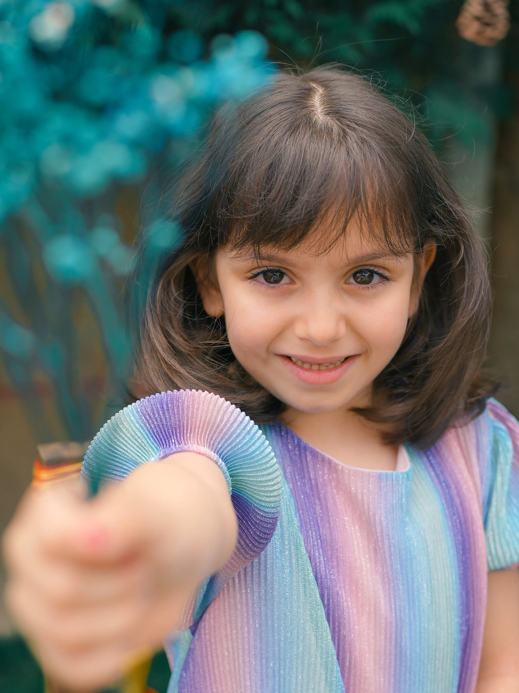
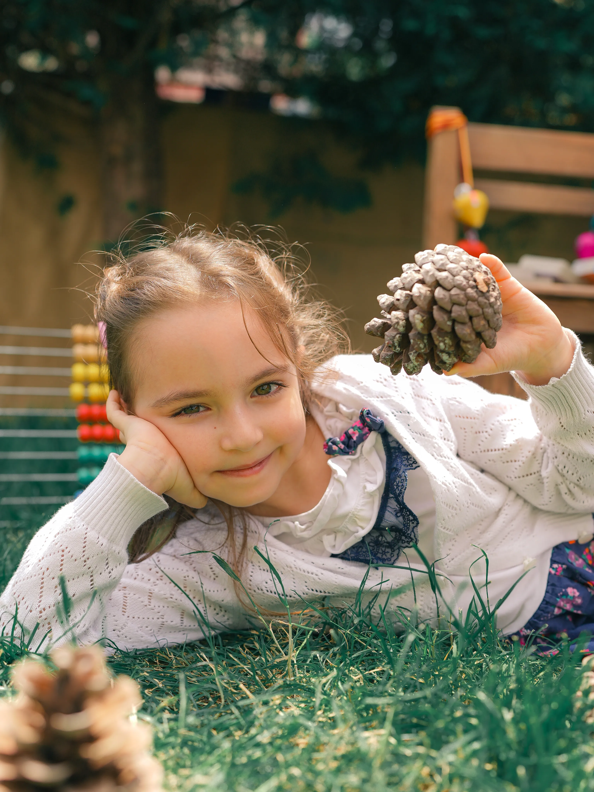

Anaokulu ve Kreş Çekimlerinde Dikkat Edilmesi Gereken Yöntemler
Küçük çocuklarla çalışırken doğallığı yakalamanın ve stresi önlemenin pedagojik ipuçları nelerdir?
Devamını Oku ➔
Mezuniyet Fotoğrafları Neden Profesyonel Olmalı?
Kep atma törenlerinde cep telefonu kameralarının yetersiz kaldığı durumlar ve albümlemenin önemi.
Devamını Oku ➔
Kreş Tanıtım Filmi Velileri Nasıl İkna Eder?
Sosyal medya reklamlarında okulları rakiplerinden öne çıkaran drone ve modern video teknikleri.
Devamını Oku ➔
23 Nisan ve Resmi Bayram Gösterileri İçin Fotoğraf Çekim Rehberi
23 Nisan kreş gösterisi ve resmi bayram okulu etkinliklerinde profesyonel fotoğraf çekimi planlaması.
Devamını Oku ➔
Kreş Yıllığı: Öğretmenler ve Aileler Arasında Kurulan Altın Köprü
Anaokulu yıllığı ve mezuniyet tasarımı. Bir kreşin marka değerini artıran en önemli basılı hatıralar.
Devamını Oku ➔
Okul Öncesi Erken Kayıtları Artıracak Dijital Fotoğrafçılık Stratejileri
Kreş pazarlaması, anaokulu öğrenci kontenjanlarını artırma ve dijital sosyal medya taktikleri.
Devamını Oku ➔
Çocuklarda Kamera Korkusu (Lens Şoklaması) Nasıl Yenilir?
Bebek ve çocuk fotoğrafçısı ipuçları, utangaç çocukları çekime dahil etmek için pedagog yaklaşımları.
Devamını Oku ➔
Sınıf İçi Doğal Çekim vs Kurgusal Stüdyo Çekimi
Okul içinde belgesel tadında doğal çekimler mi yoksa fon perdeli kurgusal fotoğrafçılık mı?
Devamını Oku ➔
E-Okul Kayıtları İçin Kusursuz ve Güvenli Vesikalık Süreçleri
E-okul biyometrik vesikalık standartları, öğrenci kayıt fotoğrafı koşulları ve profesyonel hizmetler.
Devamını Oku ➔
Çocuk Fotoğrafçılığında Sosyal Medya Mahremiyeti ve KVKK Kuralları
Kreş fotoğraflarını sosyal medyada paylaşırken dikkat edilmesi gereken gizlilik kuralları.
Devamını Oku ➔
Drone Çekimi: Okul Bahçesi ve Fiziksel Kapasiteyi Göstermenin Gücü
Kreş drone çekimi, anaokulu bahçesi havadan tanıtımı ve özelliklerini velilere sunma.
Devamını Oku ➔
Kardeş İndirimi ve Toplu Çekimlerde Anaokulu Kampanyaları
Kreş fotoğraf çekimi fiyatları, toplu anaokulu paketleri ve indirim kampanyaları.
Devamını Oku ➔
Ekolojik Çocuk Albümleri: Doğa Dostu Akordion Baskı Malzemeleri
Çevre dostu kağıt malzeme, akordion albüm ve geri dönüştürülmüş baskı çerçeveleri.
Devamını Oku ➔